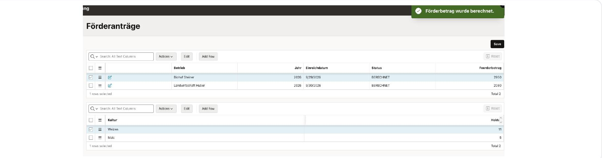
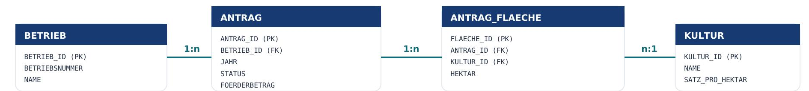
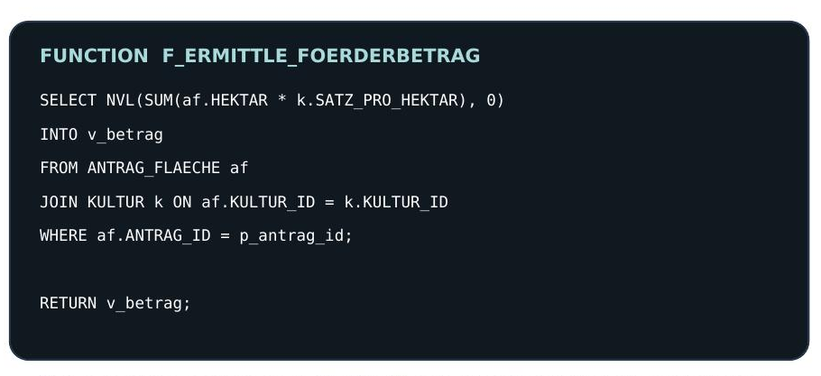
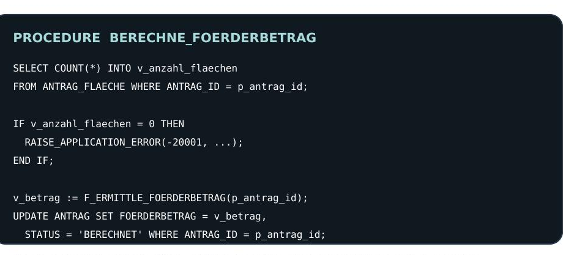
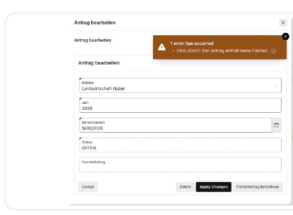
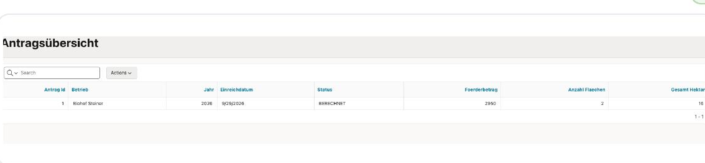

Overview
Agricultural subsidy applications need structured master data, multiple land areas per application, a clear status, and a reproducible calculation. This application covers that end to end in Oracle APEX: a farm submits an application, areas are added with their crop and size, the application is validated, the subsidy amount is calculated, and the result and status are stored.
Built as a personal portfolio prototype for interviews around a role modeled on Agrarmarkt Austria's INVEKOS-style subsidy processing — the data and business rules are simplified demo assumptions, not a claim to know AMA's actual systems.

Master-detail view after a successful PL/SQL calculation: 2,080 subsidy amount, status BERECHNET.
Data model
The business process is create application → add areas → validate data → calculate amount → store result/status. Four tables carry it: a farm (BETRIEB) has many applications (ANTRAG) across years; each application has many areas (ANTRAG_FLAECHE); each area references a crop (KULTUR) that carries the per-hectare rate the calculation uses.

| Rule | Enforced by |
|---|---|
| One application per farm and year | UNIQUE (BETRIEB_ID, JAHR) |
| Area sizes must be positive | CHECK (HEKTAR > 0) |
| Applications, areas, crops, and farms stay consistent | Foreign keys between all four tables |
| Readable names in the UI, technical IDs in the database | APEX List of Values on top of the FK columns |
Business logic in PL/SQL, not in the UI
The calculation is split into a pure function and a procedure that controls the process, so the APEX page never duplicates the business rule itself — it just calls into the database. The function only calculates; the procedure validates first, then calls the function, then persists the result.

The function: pure calculation, receives an application ID, returns a NUMBER.

The procedure: validates first, calls the function, then updates status and amount.
The "Förderbetrag berechnen" button on the APEX page passes the current application ID to the procedure — nothing else. Status and the calculated amount are display-only fields controlled entirely by this logic, not editable directly.
Testing & reporting
Two manual end-to-end tests cover the behavior that matters: a normal calculation, and what happens when the precondition isn't met.

Negative test: an application without areas is rejected with ORA-20001 before any amount is written.

V_ANTRAG_UEBERSICHT: a reporting view, used directly as the data source for an APEX Interactive Report.
The reporting view joins application and farm data, uses a LEFT JOIN so applications stay visible even before any area is added, and aggregates the area count and total hectares per application.
Limitations
This is intentionally a small prototype, not a claim to replicate AMA's actual INVEKOS-style systems — the data model, subsidy rates, and business rules are simplified demo assumptions. Testing is manual rather than automated. There's a single status value set by the calculation (BERECHNET) rather than a fuller application workflow, and no role-based authorization — anyone with access to the app can edit any application.
What's next
Historical subsidy rates by year, instead of a single current rate per crop. A richer status workflow beyond NEU/BERECHNET. Role-based authorization so only the right users can edit a given farm's applications. Automated tests instead of the two manual cases. A REST endpoint for submitting applications programmatically, audit logging on status and amount changes, and geospatial data for the areas themselves rather than just a hectare figure.